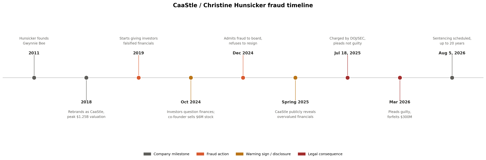

Code
# The Whole code is generated by Claude
"""
Horizontal timeline chart of the CaaStle / Christine Hunsicker fraud case.
Requires only matplotlib: pip install matplotlib
"""
import matplotlib.pyplot as plt
import matplotlib.patches as mpatches
# --- Event data: (date label, short description, category) -----------------
# Swap this list out for your own events to reuse the chart for anything else.
events = [
("2011", "Hunsicker founds\nGwynnie Bee", "milestone"),
("2018", "Rebrands as CaaStle,\npeak $1.25B valuation", "milestone"),
("2019", "Starts giving investors\nfalsified financials","fraud"),
("Oct 2024", "Investors question finances;\nco-founder sells $6M stock", "warning"),
("Dec 2024", "Admits fraud to board,\nrefuses to resign", "fraud"),
("Spring 2025", "CaaStle publicly reveals\novervalued financials","warning"),
("Jul 18, 2025", "Charged by DOJ/SEC,\npleads not guilty", "legal"),
("Mar 2026", "Pleads guilty,\nforfeits $300M", "legal"),
("Aug 5, 2026", "Sentencing scheduled,\nup to 20 years", "milestone"),
]
# --- Category -> color and legend label --------------------------------------
colors = {
"milestone": "#5f5e5a", # gray
"fraud": "#d85a30", # coral
"warning": "#ba7517", # amber
"legal": "#a32d2d", # red
}
legend_labels = {
"milestone": "Company milestone",
"fraud": "Fraud action",
"warning": "Warning sign / disclosure",
"legal": "Legal consequence",
}
# --- Build the figure ----------------------------------------------------------
n = len(events)
fig, ax = plt.subplots(figsize=(18, 6))
# the horizontal spine all markers sit on
ax.axhline(0, color="#cccccc", linewidth=1.5, zorder=1)
for i, (date, desc, cat) in enumerate(events):
color = colors[cat]
above = i % 2 == 0 # alternate labels above/below the line
sign = 1 if above else -1
va = "bottom" if above else "top"
# connector from the spine up/down to the label
ax.plot([i, i], [0, sign * 0.45], color=color, linewidth=1, zorder=2)
# marker dot on the spine
ax.scatter(i, 0, s=140, color=color, zorder=3, edgecolor="white", linewidth=1.5)
# bold date label, closer to the line
ax.text(i, sign * 0.45, date, ha="center", va=va,
fontsize=10.5, fontweight="bold", color="#2c2c2a")
# description, further from the line
ax.text(i, sign * 0.65, desc, ha="center", va=va,
fontsize=9, color="#5f5e5a", linespacing=1.6)
# --- Cosmetics -------------------------------------------------------------
ax.set_xlim(-0.6, n - 0.4)
ax.set_ylim(-1.3, 1.3)
ax.axis("off")
ax.set_title("CaaStle / Christine Hunsicker fraud timeline",
fontsize=15, fontweight="bold", pad=15)
handles = [mpatches.Patch(color=c, label=legend_labels[k]) for k, c in colors.items()]
ax.legend(handles=handles, loc="upper center", bbox_to_anchor=(0.5, -0.05),
ncol=4, frameon=False, fontsize=9.5)
plt.tight_layout()
# plt.savefig("caastle_timeline.png", dpi=200, bbox_inches="tight")
plt.show()